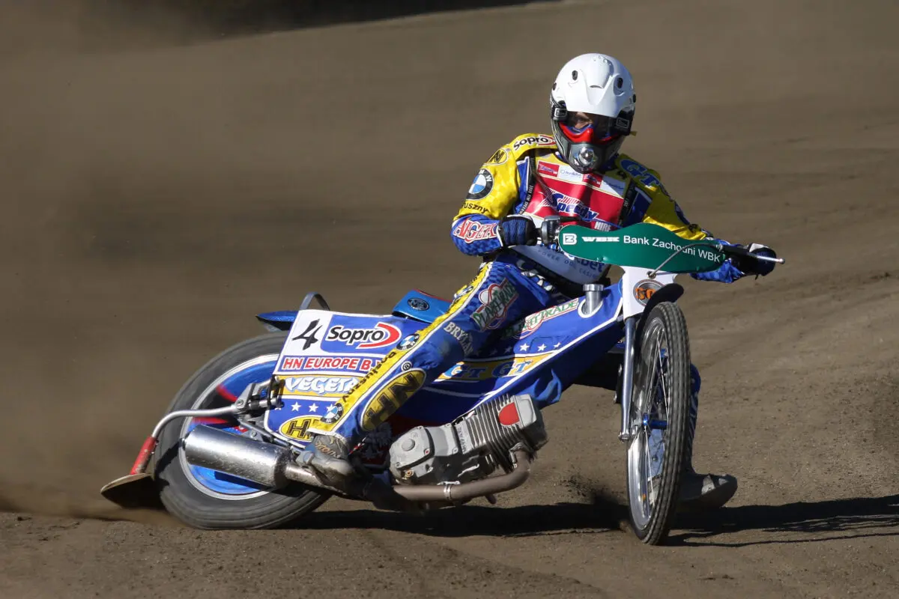
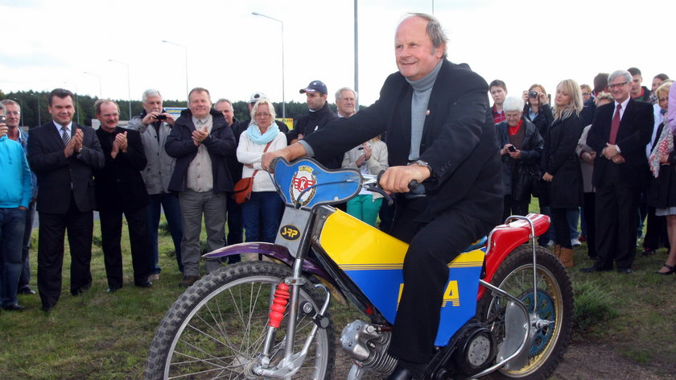

Historia żużla obfituje w legendarnych zawodników, którzy swoimi umiejętnościami, charakterem i niezliczonymi zwycięstwami na zawsze wpisali się w annały tego sportu. Poniżej przedstawiamy sylwetki wybranych ikon żużla, którzy swoją jazdą zachwycali fanów na całym świecie.
Bartosz Zmarzlik
Urodzony: 1995 | Narodowość: Polska
Wielokrotny Indywidualny Mistrz Świata, uznawany za dominującą postać współczesnego żużla. Jego profesjonalizm, precyzja i niesamowita szybkość sprawiają, że jest jednym z najbardziej utytułowanych zawodników w historii.
Więcej o Bartoszu Zmarzliku

Tomasz Gollob
Urodzony: 1971 | Narodowość: Polska
Legenda polskiego żużla, Indywidualny Mistrz Świata z 2010 roku. Znany z agresywnej i brawurowej jazdy, która przysporzyła mu miliony fanów. Jego kariera to symbol polskiej potęgi w żużlu.
Więcej o Tomaszu Gollobie

Jerzy Szczakiel
Urodzony: 1949 | Narodowość: Polska
Pierwszy polski Indywidualny Mistrz Świata (1973). Jego zwycięstwo było historycznym momentem dla polskiego sportu żużlowego i otworzyło drogę dla kolejnych sukcesów.
Więcej o Jerzym Szczakielu
Tony Rickardsson
Urodzony: 1966 | Narodowość: Szwecja
Sześciokrotny Indywidualny Mistrz Świata, jeden z najbardziej utytułowanych zawodników w historii żużla. Jego dominacja w latach 90. i na początku XXI wieku jest legendarna.
Więcej o Tony'm Rickardssonie
Ivan Mauger
Urodzony: 1939 | Narodowość: Nowa Zelandia
Sześciokrotny Indywidualny Mistrz Świata, legenda żużla z Nowej Zelandii. Jego dominacja w latach 60. i 70. uczyniła go ikoną sportu. Uznawany za jednego z najwybitniejszych wszech czasów.
Więcej o Ivanie Maugerze
Hans Nielsen
Urodzony: 1959 | Narodowość: Dania
Czterokrotny Indywidualny Mistrz Świata, Duńczyk, który przez lata był symbolem perfekcji i opanowania na torze. Jego styl jazdy i osiągnięcia budziły podziw.
Więcej o Hansie Nielsenie
To tylko wybrane sylwetki z bogatej historii żużla. Wielu innych zawodników również zasługuje na miano legend, a ich historie zostaną przedstawione w osobnych artykułach.